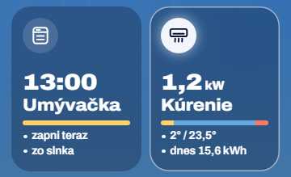
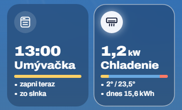
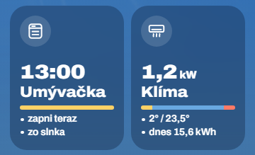
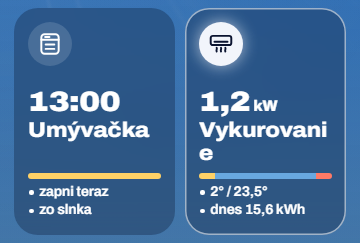

Dlaždica Klíma: meno podľa režimu a ventilátor
Rozhodnuté 27. 11. 2026: Kúrenie, Chladenie, Auto, Sušenie, Vetranie (odpoveď sa stratila - v dotazníku mala ten istý
kľúč ako ventilátor, ostal návrh), vypnutá Off, bez spojenia Off-line s časom aj menom vo farbe jantárového rámu. Ventilátor F1
- stĺpce vpravo hore, len keď je zapnutá. Snímky hotovej dlaždice: teraz-klima-rezim/hotove-*.png.
Dlaždica na karte Teraz sa dnes volá vždy Klíma. Návrh: volať ju podľa režimu, ktorý je nastavený priamo na Daikine
(adaptér ho hlási v mode), a vpravo hore ukázať otáčky ventilátora (f_rate).
Rozmery sú zmerané v appke pri šírke telefónu 360 px: dlaždica má 161 px, na meno ostáva 133 px v písme appky (Archivo
800, 21,25 px). Náhľad pri každej otázke meria v tom istom písme a povie, keď sa meno nezmestí. Snímky dole sú z appky s ručne
vloženým obsahom.
0 / 9 zodpovedaných
Načítavam odpovede…
Meno dlaždice podľa režimu
Meno sa mení hneď, ako niekto prepne režim ovládačom alebo v appke Onecta - appka ho uvidí pri ďalšom hlásení skriptu Shelly
(každú minútu). Pri každom režime: 1 ponechať „Klíma“, 2 vlastné, 3 môj návrh.

Kúrenie, kompresor beží (biely kruh)

Chladenie - najdlhšie, čo sa zmestí (116 px)

Vypnutá: Klíma, kruh nie je biely

Vykurovanie (143 px) sa nezmestí a zalomí - preto Kúrenie
Otáčky ventilátora na dlaždici
Daikin hlási f_rate: A = automaticky, B = tichý režim, 3 až 7 = stupne 1 až 5 (ako na ovládači). Panel Klíma ho už
ukazuje v Podrobnostiach. Návrh pre všetky varianty: na dlaždici len keď je klimatizácia zapnutá; vypnutá ani bez spojenia
ventilátor neukazuje. Čítačka dostane text „ventilátor stupeň 3“, „ventilátor automaticky“, „tichý“.
Poznámka
Zmerané šírky mien
V appke pri 360 px, miesto na meno 133 px. Pri užšom telefóne sa písmo zmenšuje spolu s dlaždicou, pomer ostáva.